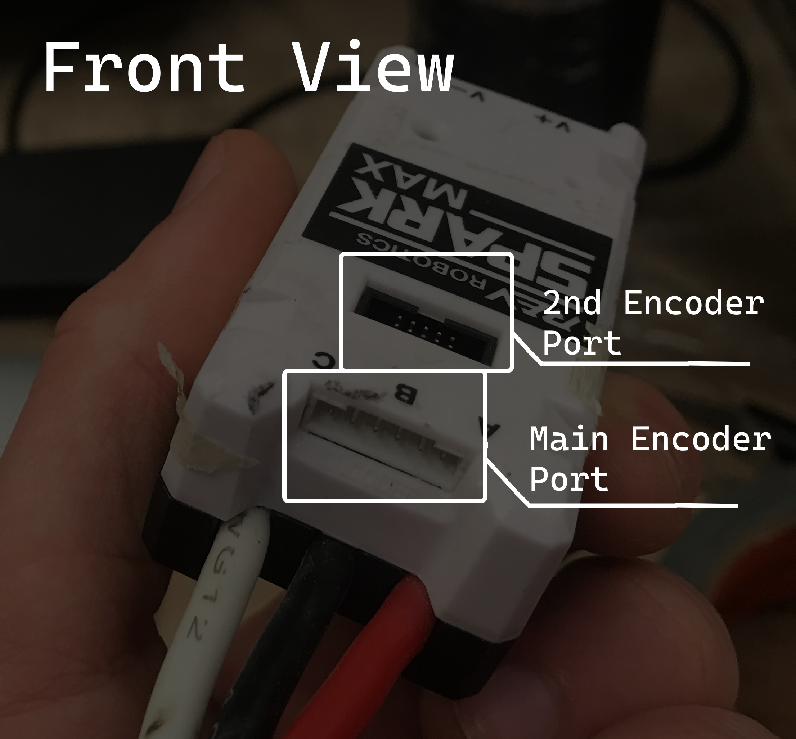
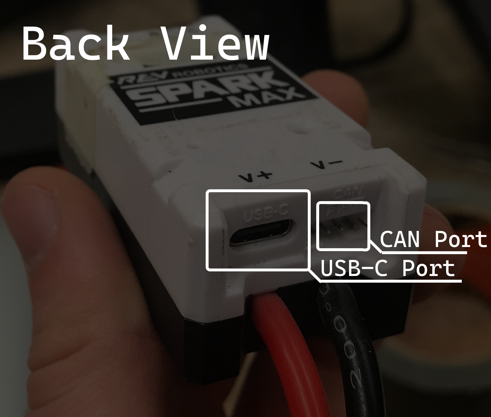

Configuring SparkMAXs
in progress
Like all other REV devices (I think), you can configure SparkMAXs through REV Hardware Client. To do this you'll need to connect a laptop (that has REV Hardware Client installed) to the SparkMAX's USB-C port.
For reference:
 
When starting the REV client on a laptop, you'll see this:
{image of the hardware client dashboard}
The main reasons we would need to plug into a SparkMAX are to change its CAN id, or clearing sticky faults. These are done as follows:
{}